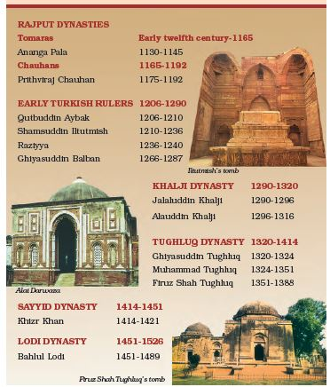
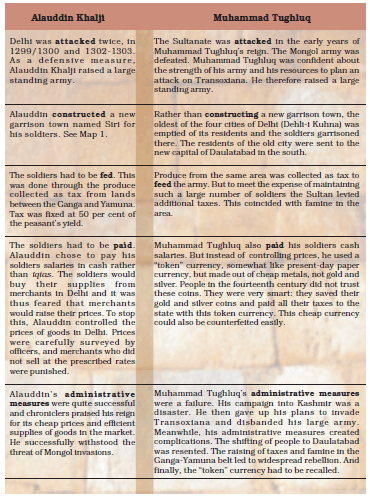

See The Chapter PDF
Delhi Sultans
-
Under the Tomaras and Chauhans, Delhi became an important commercial
centre.
-
Many rich Jaina merchants lived in the city and constructed several
temples.
-
Coins called dehliwal were minted in Delhi and had a wide
circulation.
-
The transformation of Delhi into a capital controlling vast areas began
with the foundation of the Delhi Sultanate in the early
13th century.
-
The Delhi Sultans built many cities in the area now known as Delhi.
Rulers of Delhi

Finding Out about the Delhi Sultans
Tarikh (singular)/tawarikh (plural) are valuable histories, written in
Persian, the language of administration under the Delhi Sultans that
provide a lot of information. It was written by learned men- secretaries,
administrators, poets and courtiers, who both recounted events and advised
rulers on governance, emphasising the importance of the just rule.
Following ideas to keep in mind:
-
the authors of tawarikh lived in cities (mainly Delhi) and hardly ever
in villages.
-
They often wrote their histories for Sultans in the hope of rich
rewards.
-
These authors advised rulers on the need to preserve an “ideal” social
order based on birth right and gender distinctions.
- Not everybody followed these ideas.
-
In 1236-Sultan Iltutmish’s daughter, Raziyya became Sultan-chronicler of
the age, Minhaj-i Siraj, stated she was more able and qualified than all
her brothers-He was not comfortable at having a queen as ruler- Nobles
not happy at her attempts to rule independently. 1240-She was removed
from the throne.
The Expansion of the Delhi Sultanate
-
Delhi's authority was challenged by
Mongol invasions from Afghanistan.
-
The Sultanate consolidation occurred during the reign of
Ghiyasuddin Balban and expanded further under
Alauddin Khalji and Muhammad Tughluq.
-
The first campaigns along the “internal frontier” of the
Sultanate aimed at consolidating the hinterlands of
garrison towns.
-
The second expansion occurred along the “external frontier”
of the Sultanate.
A Closer Look: Administration and Consolidation under the Khaljis and
Tughluqs
-
Consolidation of a kingdom (as vast as the Delhi Sultanate) requires
reliable governors and administrators. Early Delhi Sultans, especially
Iltutmish did not appoint aristocrats and landed chieftains as
governors. They favoured their special slaves purchased for military
service(called bandagan in Persian). The Khaljis and Tughluqs continued
to use bandagan and also raised people of humble birth, who were often
their clients, to high political positions and appointed them as
generals and governors leading to political instability. Slaves and
clients were loyal to their masters and patrons, but not to heirs. The
accession of a new monarch often saw conflict between the old and the
new nobility. Patronage of these humble people by the Delhi Sultans
shocked many elites and the authors of Persian tawarikh criticised the
Delhi Sultans for appointing the “low and base-born” to high offices.
-
The Khalji and Tughluq monarchs appointed military commanders as
governors of territories of varying sizes (called iqta) and their holder
was called iqtadar or muqti- duty of the muqtis to lead military
campaigns and maintain law and order in their iqtas-In exchange for
their military services, the muqtis collected the revenues of their
assignments as salary-paid their soldiers from this revenues-to make the
control over muqtis most effective their office was not inheritable-they
were assigned iqtas for a short period of time before being
shifted-appointed accountant checked the amount of revenue collected by
the muqtis-As the Delhi Sultans brought the hinterland of the cities
under their control, they forced the landed chieftains – the Samanta
aristocrats and rich landlords to accept their authority-Under Alauddin
Khalji, the state brought the assessment and collection of land revenue
under its own control- rights of the local chieftains to levy taxes
cancelled and were also forced to pay taxes-Some of the old chieftains
and landlords serve the Sultanate as revenue collectors and assessors.
-
There were three types of taxes: (1) on cultivation called kharaj and
amounting to about 50% of the peasant’s produce, (2) on cattle and (3)
on houses-Large parts of the subcontinent remained outside the control
of the Delhi Sultans-was difficult to control distant provinces like
Bengal from Delhi-after annexing southern India, the entire region
became independent- In the Gangetic plain, there were forested areas
that Sultanate forces could not penetrate- Local chieftains established
their rule in these regions-Rulers like Alauddin Khalji and Muhammad
Tughluq could force their control for a short duration in these areas.
-
1219- Mongols under Genghis Khan invaded Transoxiana in north-east
Iran-Delhi Sultanate faced their onslaught soon after-Mongol attacks on
the Delhi Sultanate increased during the reign of Alauddin Khalji and in
the early years of Muhammad Tughluq’s rule-forced the two rulers to
mobilise a large standing army in Delhi which posed a huge
administrative challenge.
See, below how both the sultans dealt with these administrative
challenges:

The Sultanate in the Fifteenth and Sixteenth Centuries
-
After the Tughluqs, the Sayyid and
Lodi dynasties ruled from Delhi and
Agra until 1526.
-
By this time, Jaunpur, Bengal,
Malwa, Gujarat, Rajasthan and
South India had independent rulers with flourishing states.
-
This period saw the rise of new ruling groups like the
Afghans and the Rajputs.
-
Sher Shah Sur (1540-1545) began as a manager of a small
territory in Bihar and eventually challenged and defeated
the Mughal emperor Humayun (1530-1540, 1555-1556).
MCQs
1. The duty of ______ was to lead military campaigns and maintain laws
and orders in their iqtas.
(a) Manager
(b) Muqtis
(c) Iaush
(d) Mantri
► (b) Muqtis
2. _______, the lands adjacent to a city or port that supply it with
goods and services.
(a) Garrison
(b) Doab
(c) Hinterland
(d) Delta
► (c) Hinterland
3. Who was the founder of slave dynasty?
(a) Balban
(b) Qutt-ud-din Aibak
(c) Razia
(d) Alla-ud-din Khilji
► (b) Qutt-ud-din Aibak
4. A mosque is called a masjid in Arabic, literally a place where a
_______ prostrates in reverence to Allah.
(a) Sikh
(b) Christian
(c) Hindu
(d) Muslim
► (d) Muslim
5. What is the time of rule of Qutbuddin Aybak?
(a) 1236 to 1240
(b) 1210 to 1236
(c) 1206 to 1210
(d) 1266 to 1287
► (c) 1206 to 1210
6. Muhammad Tughlaq built Begumpuri mosque in his capital _____.
(a) Delhi
(b) Patna
(c) Hastinapur
(d) Agra
► (a) Delhi
7. _____ changed her name on her inscriptions and pretended she was a
man.
(a) Rudramadevi
(b) Bina Devi
(c) Raziyya
(d) Ali
► (a) Rudramadevi
8. Warangal is in
(a) Kerala
(b) Andhra Pradesh
(c) Tamil Nadu
(d) Bihar
► (b) Andhra Pradesh
9. The transformation of Delhi into a capital that controlled vast
areas of the subcontinent started with the foundation of the Delhi
Sultanate in the beginning of the
(a) Thirteenth century
(b) Twelfth century
(c) Eleventh century
(d) Eighteenth century
► (a) Thirteenth century
10. Sultan Iltutmish's daughter
(a) Roza
(b) Raza
(c) Riayaza
(d) Raziyya
► (d) Raziyya
11. The Khalji and Tughluq Monarchs appointed military commanders as
governors of territories of varying sizes. These lands were called
_____.
(a) Doab
(b) Kshetra
(c) Iqta
(d) Region
► (c) Iqta
12. What was the period of rule of Qutb-ud-din Aibak?
(a) 1206 - 1210 A.D.
(b) 1208 - 1212 A.D.
(c) 1210 - 1214 A.D.
(d) 1220 - 1225 A.D.
► (a) 1206 - 1210 A.D.
13. Which of the following is not from the Rajput dynasty
(a) Tomaras
(b) Ananga Pala
(c) Raziyya
(d) Chauhans
► (c) Raziyya
14. What is the time of rule of Ananga Pala?
(a) 1165 to 1192
(b) 1200 to 1165
(c) 1130 to 1145
(d) 1175 to 1192
► (c) 1130 to 1145
15. Delhi became an important city only in the _____ century.
(a) fifteenth
(b) thirteenth
(c) fourteenth
(d) twelfth
► (d) twelfth
16. When did Muhammad-bin Tughlaq die?
(a) 1316
(b) 1320
(c) 1325
(d) 1351
► (d) 1351
17. Which of the following city was not developed by Delhi
Sultanate
(a) Jahanpanah
(b) Siri
(c) Delhi-i-kunha
(d) Agra
► (d) Agra
18. Privileges claimed on account of birth. For example, people
believed that nobles inherited their rights to govern, because they were
born in certain families.
(a) Firstright
(b) Primeright
(c) Birthright
(d) Basicright
► (c) Birthright